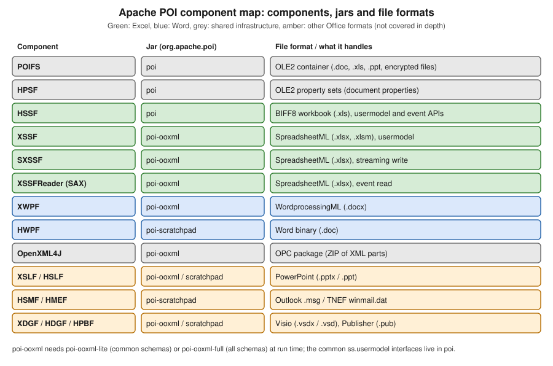

Introduction & Architecture
|
This content was generated with the assistance of AI and should be verified against the official documentation before being relied on in production. |
Baseline date: 2026-10-09. This page was written against Apache POI 5.5.1 (the latest release on that date; the 6.0 line is announced but has not been released), Java 21 and later, Spring Boot 4.x on Spring Framework 7 and Jakarta EE 11. It is the map of the whole section: it explains what the library is, how it is split into components and jars, which file formats each component reads and writes, and which of its three API levels fits a given job. The later pages go deep into each area and use the Bookshelf scenario described in the section landing page. Jar coordinates and build files are in Setup & Dependencies, and the file formats themselves in File Formats: OOXML & OLE2.
What Apache POI is
Apache POI is a pure Java library, published by the Apache Software Foundation under the Apache License 2.0, that reads and writes the file formats of Microsoft Office. It needs no Office installation, no native code and no COM bridge, so it runs on any server, in a container and in a unit test. It works on the files themselves: it parses the binary or XML structures, gives you an object model over them, and serialises the model back. It is not a rendering engine: it never lays out pages, never calculates what a Word document looks like on paper and never opens a user interface.
The project started in the early 2000s as a Jakarta subproject and later became a top-level Apache project. Its history explains the odd class names:
-
The name POI is a joke on Poor Obfuscation Implementation, a nod to the deliberately obscure Microsoft file formats that the first contributors had to reverse engineer.
-
The first two components were named with the same humour. HSSF is the Horrible Spreadsheet Format (Excel
.xls) and HWPF the Horrible Word Processor Format (Word.doc). The official documentation still uses the expansions. -
When OOXML support arrived (POI 3.5), the new components were named by analogy: XSSF is the XML Spreadsheet Format (
.xlsx), XWPF the XML Word Processor Format (.docx), XSLF the XML Slide Layout Format (.pptx). The first letter tells the generation: H means a binary OLE2 format, X means an XML (OOXML) format. -
POI follows semantic versioning since 4.0.0: an API is deprecated in one major release and removed in the next, which is why 6.0 is announced as the release that removes the deprecated code of the 5.x line.
Do not copy code from older POI 3.x tutorials. Code written for POI 3.x uses
integer cell types such as HSSFCell.CELL_TYPE_STRING, Cell.getCellTypeEnum() and XSSFWorkbook(InputStream)
everywhere. Those idioms were removed or discouraged by 4.0 and 5.x; every example in this section uses the current API.
The component map
POI is a family of components, each named after the format it handles, and distributed in a small number of jars. The figure shows the components, the jar of each and the formats they cover.

The same information as a table, with the role each component plays in this section:
| Component | Jar | Formats and role | Role in this section |
|---|---|---|---|
POIFS |
|
The OLE2 compound file system (a small file system inside one file). Container of every binary Office format and of encrypted OOXML files. |
Detection, encryption |
HPSF |
|
OLE2 property sets: the summary information (title, author, creation date) of binary Office files. |
Document properties |
HSSF |
|
Excel 97-2003 workbooks ( |
Legacy Excel import |
XSSF |
|
Excel 2007 and later workbooks ( |
Excel export and import |
SXSSF |
|
Streaming, write-only variant of XSSF with a sliding window of rows kept in memory. |
Large exports |
XSSFReader and the event model |
|
SAX reading of |
Large imports |
XWPF |
|
Word 2007 and later documents ( |
Word export and import |
HWPF |
|
Word 97-2003 documents ( |
Legacy Word import (read only) |
OpenXML4J |
|
The Open Packaging Conventions layer: opens a ZIP file as a set of parts and relationships. |
Underneath XSSF and XWPF |
XSLF and HSLF |
|
PowerPoint |
Not covered in depth |
HSMF and HMEF |
|
Outlook |
Not covered in depth |
XDGF, HDGF and HPBF |
|
Visio |
Not covered in depth |
The consequences for a server project are practical:
-
Everything you need for
.xlsxand.docxis inpoi-ooxml, which depends onpoi. Addpoi-scratchpadonly if you must read.doc,.ppt,.msg,.vsdor.pub. -
OOXML parts are mapped to Java objects by Apache XMLBeans, generated from the ECMA-376 schemas. Those generated classes are large, so the schemas are shipped in two jars:
poi-ooxml-lite(about 6 MB, the commonly used schemas) andpoi-ooxml-full(about 16 MB, all of them). Code that reaches into the rawCT*beans, or that signs documents, may need the full jar. The choice is explained in the setup page. -
POI 5.0 renamed and re-split the jars (the former
ooxml-schemasjars became lite and full), so a 4.x build file does not carry over unchanged. See the migration page of this section for the history.
OLE2 versus OOXML
Every format in the table is one of two physical containers, and most POI behaviour follows from that.
| Aspect | OLE2 (binary, "H" components) | OOXML (XML in a ZIP, "X" components) |
|---|---|---|
Typical extensions |
|
|
Container |
A compound file: sectors, a FAT and a directory of streams (POIFS) |
A ZIP archive of XML parts and relationship files (OpenXML4J) |
Specification |
Microsoft binary format documents (MS-XLS, MS-DOC) |
ECMA-376 and ISO/IEC 29500 |
Limits |
Excel: 65,536 rows by 256 columns, 4,000 cell styles |
Excel: 1,048,576 rows by 16,384 columns, 64,000 cell styles |
Read model |
Whole file loaded in memory (or record events for HSSF) |
Parts parsed on demand to XMLBeans; XSSF keeps the model in memory; SAX is available for sheets |
Typical risks |
Malformed records, oversized streams |
Zip bombs, XML external entities, oversized parts |
Status |
Legacy, kept for compatibility |
The default for new files |
The practical rule: produce .xlsx and .docx, and accept .xls and .doc only when users still send them. An
encrypted OOXML file is, surprisingly, an OLE2 file: the encrypted package is stored as a stream inside a compound
file, which is why detection by file extension or by the ZIP signature alone is not enough. The two formats are
described in depth in File Formats: OOXML & OLE2.
Three API levels
For spreadsheets, POI exposes the same data through three kinds of API. Choosing among them is the most important design decision of a report or import feature; the performance page of this section revisits it with measurements.
| API level | Packages and classes | Memory | Use it for |
|---|---|---|---|
Usermodel (read and write) |
|
The whole workbook or document is a tree of objects in memory, typically many times the file size |
Reports up to some tens of thousands of rows, files you edit in place, anything needing styles, formulas and random access |
Event model (read only) |
|
Low and independent of the row count, but the shared-strings table and the styles are held in memory |
Importing very large sheets row by row, extracting text, validation passes that do not need the object model |
Streaming write (write only) |
|
Only a window of rows (100 by default) is kept; older rows are flushed to a temporary file |
Exporting hundreds of thousands of rows, such as the |
Word has only the usermodel level: XWPFDocument loads the whole document. There is no streaming writer and no SAX
reader for .docx in POI itself, which is one more reason to keep generated documents small and to cap upload sizes.
Usermodel in practice
The first example creates the catalogue workbook of the scenario through the usermodel API. The variable type is the
interface Workbook; only the constructor names the format.
import java.io.IOException;
import java.io.OutputStream;
import java.nio.file.Files;
import java.nio.file.Path;
import org.apache.poi.ss.usermodel.Row;
import org.apache.poi.ss.usermodel.Sheet;
import org.apache.poi.ss.usermodel.Workbook;
import org.apache.poi.xssf.usermodel.XSSFWorkbook;
public class CreateInventory {
public static void main(String[] args) throws IOException {
try (Workbook workbook = new XSSFWorkbook()) {
Sheet sheet = workbook.createSheet("Books");
Row header = sheet.createRow(0);
header.createCell(0).setCellValue("ISBN");
header.createCell(1).setCellValue("Title");
header.createCell(2).setCellValue("Price");
Row row = sheet.createRow(1);
row.createCell(0).setCellValue("9780140449136");
row.createCell(1).setCellValue("The Odyssey");
row.createCell(2).setCellValue(12.5);
try (OutputStream out = Files.newOutputStream(Path.of("books-inventory.xlsx"))) {
workbook.write(out);
}
}
}
}Source: POI Quick Guide, New Workbook
The try-with-resources block matters: since POI 3.x Workbook is Closeable, and closing releases the underlying
package (and, for SXSSF, deletes temporary files). Writing the file never closes the workbook.
Reading with the common interfaces
Because Workbook, Sheet, Row and Cell are interfaces, the same code reads .xls and .xlsx.
WorkbookFactory inspects the file header and returns the matching implementation. Pass a File rather than an
InputStream whenever you have one: POI can then open the file lazily and avoids copying the whole stream into memory.
import java.io.File;
import java.io.IOException;
import org.apache.poi.ss.usermodel.Cell;
import org.apache.poi.ss.usermodel.DataFormatter;
import org.apache.poi.ss.usermodel.Row;
import org.apache.poi.ss.usermodel.Sheet;
import org.apache.poi.ss.usermodel.Workbook;
import org.apache.poi.ss.usermodel.WorkbookFactory;
public class ReadInventory {
public static void main(String[] args) throws IOException {
DataFormatter formatter = new DataFormatter();
try (Workbook workbook = WorkbookFactory.create(new File("books-inventory.xlsx"))) {
Sheet sheet = workbook.getSheetAt(0);
for (Row row : sheet) {
StringBuilder line = new StringBuilder();
for (Cell cell : row) {
line.append(formatter.formatCellValue(cell)).append(" | ");
}
System.out.println(line);
}
}
}
}The event model in practice
The event API gives up the object model: you receive callbacks as the XML is parsed, so memory does not grow with the
row count. The skeleton below only opens the package and lists the sheets. Reading cell contents with
XSSFSheetXMLHandler is the subject of the large-file import page.
import java.io.File;
import java.io.InputStream;
import org.apache.poi.openxml4j.opc.OPCPackage;
import org.apache.poi.openxml4j.opc.PackageAccess;
import org.apache.poi.xssf.eventusermodel.XSSFReader;
public class ListSheets {
public static void main(String[] args) throws Exception {
try (OPCPackage pkg = OPCPackage.open(new File("loans-report.xlsx"), PackageAccess.READ)) {
XSSFReader reader = new XSSFReader(pkg);
XSSFReader.SheetIterator sheets = reader.getSheetIterator();
while (sheets.hasNext()) {
try (InputStream sheetXml = sheets.next()) {
// sheetXml is the raw SpreadsheetML of one sheet, ready for a SAX parser
System.out.println(sheets.getSheetName());
}
}
}
}
}Source: POI How-To, XSSF and SAX (Event API) and the official example XLSX2CSV
The common ss.usermodel interfaces
The package org.apache.poi.ss.usermodel (jar poi) defines the interfaces that both Excel implementations share. They
are what your service code should depend on, so that the choice between .xls, .xlsx and the streaming writer is made
in one place.
| Interface | Role | Implementations |
|---|---|---|
|
The document: sheets, styles, fonts, named ranges, properties, |
|
|
A sheet: rows, merged regions, column widths, freeze panes, print setup, drawing |
|
|
A row of cells, row height, hidden state |
|
|
A value, a |
|
|
Formatting objects, owned by the workbook and shared by cells |
|
|
Factory for hyperlinks, rich text, date and formula evaluator objects without naming the implementation |
|
|
Computes formulas on demand and can cache results |
|
A hierarchy sketch, as a Mermaid class diagram:
Two cautions apply to this abstraction:
-
The interface does not make the formats equivalent. A style count, a row limit or a feature (tables, pivot tables, some conditional-format options) exists only in XSSF, and the limits of
.xlsapply when you pick HSSF. Code that casts toXSSFSheetfor those features is normal and fine; keep the cast in one helper. -
SXSSFWorkbookimplements the interfaces but with write-only semantics: once a row leaves the window you cannot read or change it, andgetRowreturnsnullfor it.
HSSFWorkbook, XSSFWorkbook and SXSSFWorkbook are not thread safe. Use one workbook per request or per job, never a
shared static instance.
There is no common Word interface
The spreadsheet world has ss.usermodel; the Word world has nothing comparable. XWPFDocument (for .docx) and
HWPFDocument (for .doc) are unrelated classes with different object models: XWPF exposes XWPFParagraph, XWPFRun,
XWPFTable, XWPFPicture and XWPFHeader; HWPF exposes Range, Paragraph and CharacterRun. The official overview
page says so explicitly, and it adds that HWPF is orphaned and in early development, with only partial write support and
no thread safety.
The practical advice for a server:
-
Generate and edit only
.docx, through XWPF. -
Read
.doconly to extract text or simple tables, throughWordExtractoror the HWPFRange, and convert it to your internal model immediately. -
Where you only need the text of either format, use the text-extraction classes (or Apache Tika), which hide the difference. This is covered in the text extraction page of the section.
-
XWPF is described as fairly stable but incomplete: some tasks (a table of contents, custom styles, content controls) need the low-level
CT*XMLBeans objects behind the high-level classes. Those beans need the schema jar named in the setup page.
The next example creates the first paragraph of loan-letter.docx.
import java.io.IOException;
import java.io.OutputStream;
import java.nio.file.Files;
import java.nio.file.Path;
import org.apache.poi.xwpf.usermodel.XWPFDocument;
import org.apache.poi.xwpf.usermodel.XWPFParagraph;
import org.apache.poi.xwpf.usermodel.XWPFRun;
public class CreateLoanLetter {
public static void main(String[] args) throws IOException {
try (XWPFDocument document = new XWPFDocument()) {
XWPFParagraph paragraph = document.createParagraph();
XWPFRun title = paragraph.createRun();
title.setBold(true);
title.setFontSize(16);
title.setText("Loan confirmation");
XWPFParagraph body = document.createParagraph();
XWPFRun text = body.createRun();
text.setText("You have borrowed \"The Odyssey\" until 30 October 2026.");
try (OutputStream out = Files.newOutputStream(Path.of("loan-letter.docx"))) {
document.write(out);
}
}
}
}Source: POI XWPF Quick Guide and SimpleDocument example
Other components and related projects
The official component overview lists more formats than this section uses. They share the OLE2 and OPC infrastructure described above, and a server that accepts arbitrary uploads may meet any of them, so it is useful to know the names.
| Component | File type | Notes |
|---|---|---|
HSLF |
PowerPoint |
Binary slides; reading text and shapes, limited writing. Jar |
XSLF |
PowerPoint |
Slides, shapes, text, pictures; can render a slide to an image with Java 2D. Jar |
HSMF |
Outlook |
Read messages, recipients and attachments. Jar |
HMEF |
TNEF |
Extract the attachments that some mail clients wrap in this format. Jar |
HDGF and XDGF |
Visio |
Read diagram shapes and text. Jars |
HPBF |
Publisher |
Read text. Jar |
POI also has a few neighbours that are often confused with it:
| Project | Relationship to POI |
|---|---|
Apache Tika |
Content detection and text extraction for many formats, using POI underneath for Office files. The POI documentation "strongly advises" Tika for extraction when you do not need Office-specific details. |
poi-tl and XDocReport |
Template engines built on POI (listed on the official related-projects page) that fill a |
NPOI |
A .NET port of POI. It is a separate project with its own release cycle; it is mentioned here because teams that work in both Java and .NET often compare the two. |
Apache FOP |
A formatting-objects processor that renders XSL-FO to PDF. The HWPF |
What POI does not do
A frequent source of disappointment is looking in POI for features that it deliberately or practically does not provide. Stating them up front saves a week of searching.
-
No PDF output. POI cannot convert
.docxor.xlsxto PDF. The only official path is HWPF to XSL-FO to Apache FOP, which is limited to.doc. For PDF generation see the PDF Generation section, or run a converter such as LibreOffice in headless mode as a separate service. -
No Word template or mail-merge API. XWPF has no
replace placeholderfunction. Placeholders can be split across severalXWPFRunobjects, so a correct replacement must handle that. Template engines (poi-tl, XDocReport) exist on top of POI, and the Word pages of this section show a hand-written approach. -
No rendering. POI does not calculate page breaks, page counts, table of contents entries or the visual result of a formula’s number format. A table of contents field is inserted as a field and filled in by Word when the user opens the file.
-
No complete chart guide. Charts are created through the XDDF classes in
poi-ooxml; the website has no narrative guide for them, so chart code in this section derives from the official examples and the Javadoc. -
Not every Excel function. The formula evaluator implements most, but not all, built-in functions, and macros (VBA) are neither executed nor created. User-defined functions can be added.
-
Not a database. The usermodel API is an in-memory document model. For a million rows, use SXSSF to write and the SAX API to read.
References
-
Apache POI home page: https://poi.apache.org/
-
Component overview: https://poi.apache.org/components/index.html
-
Spreadsheet components: https://poi.apache.org/components/spreadsheet/
-
Spreadsheet Quick Guide: https://poi.apache.org/components/spreadsheet/quick-guide.html
-
Spreadsheet How-To (SXSSF and event API): https://poi.apache.org/components/spreadsheet/how-to.html
-
Word components: https://poi.apache.org/components/document/
-
XWPF Quick Guide: https://poi.apache.org/components/document/quick-guide-xwpf.html
-
Word overview: https://poi.apache.org/components/document/docoverview.html
-
OpenXML4J: https://poi.apache.org/components/oxml4j/
-
Related projects: https://poi.apache.org/related-projects.html
-
Versioning: https://poi.apache.org/versioning.html
-
Javadoc: https://poi.apache.org/apidocs/dev/
-
Official examples: https://github.com/apache/poi/tree/trunk/poi-examples/src/main/java/org/apache/poi/examples/
-
Apache Tika: https://tika.apache.org/
-
Apache FOP: https://xmlgraphics.apache.org/fop/
-
ECMA-376: https://ecma-international.org/publications-and-standards/standards/ecma-376/
-
Microsoft Excel specifications and limits: https://support.microsoft.com/en-us/office/excel-specifications-and-limits-1672b34d-7043-467e-8e27-269d656771c3